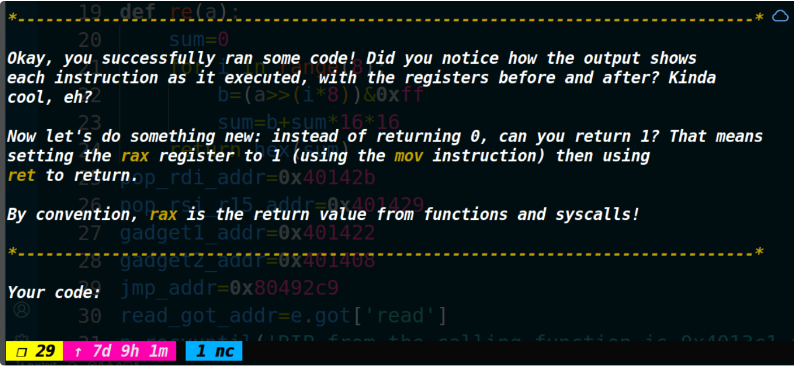
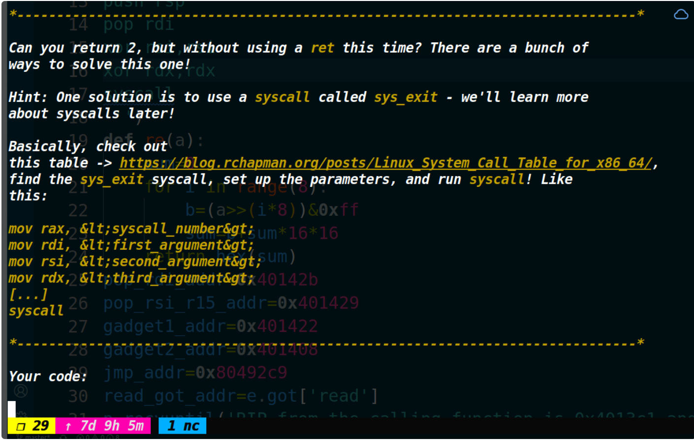

BSidesSF 2022 CTF
第一次打国外的比赛，由于好几道pwn题出的非常萌新，所以做起来比较舒服（我做出来了三道shellcode闯关和两道无保护的栈题）。其中有两道题的代码是一样的，一个是32位的，一个是64位的。整体利用思路一样，我就详细说一下32位的,64位的这个题同理。
Tutorial
这道题32位和64位的附件我上传到了百度网盘 需要的话可以下载 https://pan.baidu.com/s/1Usr3W-rE56rAL6v1FZ9qGw?pwd=sfaj 提取码：sfaj
保护策略：

只要看到没开NX，就往shellcode方面考虑。
漏洞分析：

这里程序泄露了好几个地址，并且还给了提示，说只能输入16进制的字符。结合提示继续往下分析。

程序正常可以无限次的read函数，每次可以输入0x40字节。

（结合上图）发现这个buf并不能溢出，也不能干扰到任何数据。

（结合上图）问题出在v2上面，由于read无限次被循环执行,v2却始终没有被清零，意味只要return不被触发，v2就这个下标无限制，可以一直往高地址去写入数据。再看一下decodehex这个函数（下图）

发现这里有个检查，要确定我们输入的数据是否属于0~9 a~f A~F。如果不是在这个范围的话则会返回-1。

如果返回-1的话，这个主函数就会退出了，否则就可以把这个字符存在栈里的这个位置（如下图）

可以发现这是在当前函数的返回地址下面，猛一看似乎感觉也不能修改当前函数的返回地址。不过调试一下就发现，challenge函数的返回地址在输入点的下面（这就意味着challenge函数的返回地址是可以被溢出修改的）结合上面分析的，v2没有被清零导致了数据可以无限往下输入造成溢出。

利用思路：
由于没开NX，最后获取shell的方式考虑用shellcode，不过shellcode没法第一次就直接写进去，因为即使是用纯字符的shellcode，也无法绕过检查（只有在0-9 a-f A-F之间才能通过检查，纯字符的shellcode会有其他字符)我考虑过把shellcode放到0x40的一次输入里面，然后迁移过去执行，不过由于read一次只能读入0x40，而生成的shellcode有一百二十多个字节，因此这个方法也不行。**最终的方法是劫持执行流，再执行一次read函数（控制参数，劫持返回地址为jmp esp）把shellcode精准写到jmp esp下面的地址即可获取shell。**至于再输入的这个shellcode是字符型的还是字节流无所谓了。


为什么要用jmp esp这个指令？
ret指令相当于pop eip，如果执行ret指令时栈顶的内容是shellcode机器码，那么就会把机器码弹给eip，但是eip仅仅要的是一个指令的地址而已，你却弹给它了一个机器码，因此程序就会崩溃。所以需要用jmp esp，也就是跳转到esp中存储的地址处（也就是跳转到shellcode的地址），进而执行shellcode。
劫持执行流的偏移是怎么得到的？
这个通过IDA是看不出来（也可能是我比较菜QAQ），然后通过gdb去调试，输入一些垃圾字符，看看输入到多少的时候可以溢出到challenge的返回地址。
需要注意的是，经过调试，写入栈里的地址数据是反着存储的，因此exp上写的地址应该反着写，存储的时候就正了。
EXP：
from tools import * |

Tutorial64
这道题和32位的思路是完全一样的，不一样的地方是执行read传参的时候要用一下ret2csu。
EXP：
from tools import * |

shurdles1
然后是shellcode闯关题，对于我这种萌新来说做起来还是比较有意思的。
题目就给了个ip和port，连上去直接开始闯关。

第一关

这个就是让你明确写法格式，照着输入即可。
xor rax, rax |
这个地方.是核心（这个.困扰我了很久很久，最后才发现这里的问题），或者输入机器码也行，不过我一直写的是汇编。
第二关

这一关想让你返回1，这就意味着你的rax寄存器里要是1，然后使用ret返回。
mov rax,1 |
第三关

这次是想让返回值是2，但是不想让你使用ret指令来完成。给的提示是使用系统调用exit。查一下系统调用号，然后给rdi传参为2，rax放成60(exit的系统调用号)
mov rax,60 |
第四关

这次想让返回值为3（can you exit with code 3)这句其实我也不知道咋翻译比较准确，反正我这勉强及格的英语水平能明白它意思，但是描述不是很清楚。
同时你不可以使用ret或者syscall指令。给的提示是让使用pop 和jmp来做到这一点。
ret指令相当于pop rip再跳转到rip。不能使用ret，就可以把这个指令拆开实现。先pop 一个寄存器，然后再jmp跳转过去，其实就等同于ret指令了。
mov rax,3 |

shurdles2
第一关

这一关是想让地址0x12345678出崩溃，给的提示说jmp跳转到这个地址就可以让它崩溃了。
mov rax,0x12345678 |
第二关

这次人家不让用jmp了，想让用ret。
因为ret是pop rip，所以我们提前把这个0x12345678压到栈顶，然后ret即可。
push 0x12345678 |
第三关

这一关想让你把字符串的地址保存在一个寄存器里，然后把寄存器作为返回值返回了。
汇编语言中DB是定义单字节数据段的意思，编译时DB后面的数据将视为纯数据而不是指令代码
按照给的提示，call会把下一条指令的地址压栈（也就是把字符串给压栈了），然后进行了近调用（去执行below里的内容），然后执行了pop rdi**（也就是把字符串的地址弹到了rdi里面）**，拿到了字符串的地址，然后将其赋值给rax，然后ret即可。
call below |

shurdles3
第一关

这个很简单，之前也做过了，就是要使用exit退出时的代码为123。
mov rax,60 |
第二关

想系统调用write，然后将Hello,BSides!这句话打印出来并且使用exit退出。
call write |
第三关

此时来到了最后一关。
想让我们用open,read,write来读出flag并且进行退出（人家还说Be sure to exit cleanly，我这个英语渣渣认为是要用ret返回并且返回值为0）。flag位于/app/level2.yaml
那这题不就和打宝宝一样简单么。需要注意的是人家提示说open返回的这个文件描述符是随机的，并不是3，所以这里要用mov把rax里装的返回值给传过来
call below |